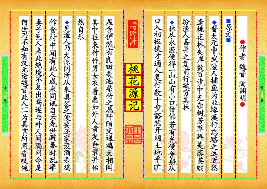
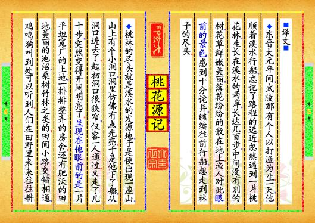
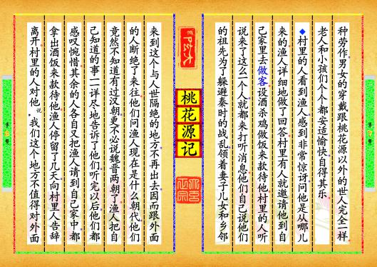

-
第【1-2】页 ⚫作者▂魏晋▂陶渊明⚫⬛原文⬛◆晋太元中，武陵人捕鱼为业。缘溪行，忘路之远近。忽逢桃花林，夹岸数百步，中无杂树，芳草鲜美，落英缤纷。渔人甚异之，复前行，欲穷其林。◆林尽水源，便得一山，山有小口，仿佛若有光。便舍船，从口入。初极狭，才通人。复行数十步，豁然开朗。土地平旷，屋舍俨然，有良田、美池、桑竹之属。阡陌交通，鸡犬相闻。其中往来种作，男女衣着，悉如外人。黄发垂髫，并怡然自乐。◆见渔人，乃大惊，问所从来。具答之。便要还家，设酒杀鸡作食。村中闻有此人，咸来问讯。自云先世避秦时乱，率妻子邑人来此绝境，不复出焉，遂与外人间隔。问今是何世，乃不知有汉，无论魏晋。此人一一为具言所闻，皆叹惋。预览书籍 全文配置
-
第【5-6】页 ⬛译文⬛◆东晋太元年间，武陵郡有个人以打渔为生。一天，他顺着溪水行船，忘记了路程的远近。忽然遇到一片桃花林，生长在溪水的两岸，长达几百步，中间没有别的树，花草鲜嫩美丽，落花纷纷的散在地上。渔人对此眼前的景色感到十分诧异，继续往前行船，想走到林子的尽头。◆桃林的尽头就是溪水的发源地，于是便出现一座山，山上有个小洞口，洞里仿佛有点光亮。于是他下了船，从洞口进去了。起初洞口很狭窄，仅容一人通过。又走了几十步，突然变得开阔明亮了。呈现在他眼前的是一片平坦宽广的土地，一排排整齐的房舍。还有肥沃的田地、美丽的池沼，桑树竹林之类的。田间小路交错相通，鸡鸣狗叫到处可以听到。人们在田野里来来往往耕预览书籍 全文配置
-
第【7-8】页 种劳作，男女的穿戴跟桃花源以外的世人完全一样。老人和小孩们个个都安适愉快，自得其乐。◆村里的人看到渔人，感到非常惊讶，问他是从哪儿来的。渔人详细地做了回答。村里有人就邀请他到自己家里去做客。设酒杀鸡做饭来款待他。村里的人听说来了这么一个人，就都来打听消息。他们自己说他们的祖先为了躲避秦时的战乱，领着妻子儿女和乡邻来到这个与人世隔绝的地方，不再出去，因而跟外面的人断绝了来往。他们问渔人现在是什么朝代，他们竟然不知道有过汉朝，更不必说魏晋两朝了。渔人把自己知道的事一一详尽地告诉了他们，听完以后，他们都感叹惋惜。其余的人各自又把渔人请到自己家中，都拿出酒饭来款待他。渔人停留了几天，向村里人告辞离开。村里的人对他说，“我们这个地方不值得对外面预览书籍 全文配置